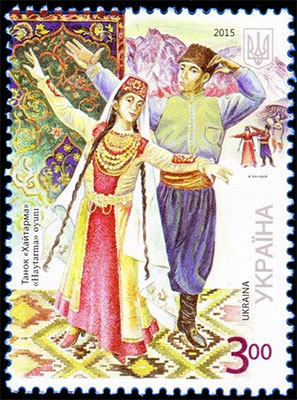
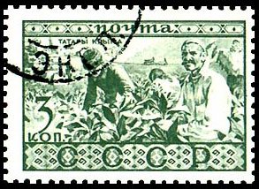
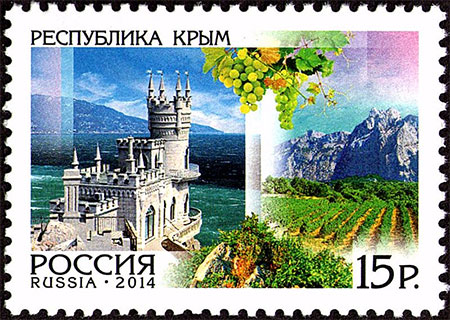
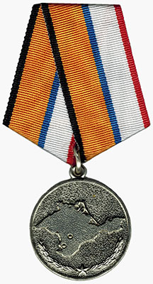
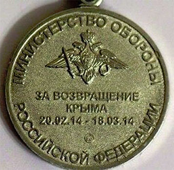

REUNIFICATIONS AND SEPARATIONS. CRIMEAN TATARS.
Crimean Tatars are a Turkic ethnic group that formed in the Crimean Peninsula in the 13th - 17th centuries, primarily from the Turkic tribes that moved to the land that is now known as Crimea in Eastern Europe from the Asian steppes beginning in the 10th century, with contributions from the pre-Cuman population of Crimea.

Crimean Tatars constituted the majority of Crimea's population from the time of its ethnogenesis until mid-19th century, and the relative largest ethnic population until the end of 19th century.
The Crimean Peninsula, also known simply as Crimea, is a major land mass on the northern coast of the Black Sea that is almost completely surrounded by both the Black Sea and the smaller Sea of Azov to the northeast. In 1783, Crimea was annexed by the Russian Empire.
See above one of the most beautiful stamps of my youth, that was issued by USSR in 1954. The stamp commemorates "300 years of reunification of Ukraine with Russia", as an alleged result of the Pereyaslav Treaty of 1654. This interpretation is heavily contested by many modern historians.
Ukraine officially declared itself an independent state on August 24, 1991, when the communist Supreme Soviet (parliament) of Ukraine proclaimed that Ukraine will no longer follow the laws of USSR and only the laws of the Ukrainian SSR, de facto declaring Ukraine's independence from the Soviet Union. The stamp above, issued in 1992, displays the flag and the coat of arms of the independent Ukrainian state.
Back to Crimean tatars. Following the bolshevik putsch of 1917, Crimea became a republic within the Russian Soviet Federative Socialist Republic in the USSR. USSR issued in 1930 a stamp that shows some Crimean Tatars at work.

In 1954, the Crimean Oblast was transferred to the Ukrainian Soviet Socialist Republic under the supervision of an ethnic ukrainian, Nikita Khrushchev, the then General Secretary of the Communist Party of the Soviet Union and one of the most adventurous/dangerous/criminal rulers of this country. The transfer was described by some of the Supreme Soviet as a gift to commemorate the 300th anniversary of the Treaty of Pereyaslav. For this "deed" the new Ukrainian state had the bad idea to commemorate Khrushchev in 2009 by showing him on a stamp.
In March 2014, following the ousting of the Ukrainian president in the 2014 Ukrainian revolution and the subsequent takeover by pro-Russian separatists and Russian special forces of the region, an unauthorized referendum on the issue of "reunification with Russia" was held in the east a nd south which returned a large majority in support of the proposal. The Russian Federation then officially annexed Crimea and now administers it as two federal subjects. Ukraine, backed by most of the international community, refuses to accept the annexation and continues to assert its right over the peninsula. Source
The Russian Federation and its current president Putin use propagandistic means to cover their expansionist politics. See below as examples a stamp issued in 2014

and the medal issued by the Russian Ministry of Defense, that was awarded "For the Return of Crimea."


The tragic past and its present day remembrance
Almost immediately after the liberation of Crimea from the German invader, in May 1944, the USSR State Defense Committee ordered the removal of all of the Tatar population from Crimea, including the families of Crimean Tatars serving in the Soviet Army - in trains and boxcars to Central Asia, primarily to Uzbekistan. Starting in 1967, some were allowed to return to Crimea, and in 1989 the USSR Parliament condemned the removal of Crimean Tatars from their motherland as inhumane and lawless. Today, Crimean Tatars constitute approximately 12% of the population of Crimea. Source
This page was inspired by the singer Jamala, who won the Eurosong 2016 contest with her song "1944". She has been inspired by the memories of her great grandmother, who was deported from Crimea with her five children in 1944, along with 240,000 other Tatars. You can listen to her song here.


|
|
Created: May 20, 2016 . Revised: Jan 29, 2024
. |